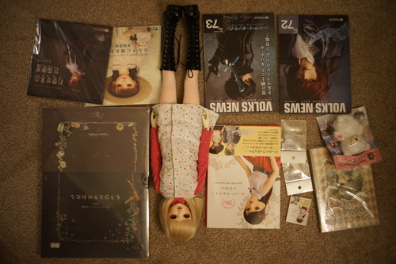
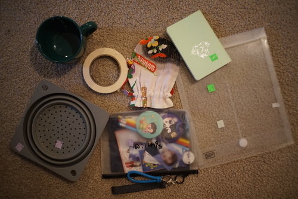

I was internet cruising the other day and ended up on VolksUSA. There is currently a sale on books and magazines! I didn't even get an email about it! I saw Another Yourself 2009 was on sale for $17.20 and HAD to order it. I ended up grabbing 2 packs of KIPS and some other books that looked fun. I realized I was really close to $100 for the free Setsuchan plushie event (which I wasn't sure was still available). I added 2 copies of the Volks News issues closest to where RG Williams was released to hit it.
First impression is Setsuchan came!!! Second impression is that Another Yourself 2009 is MASSIVE. I have no idea where I'll put it because it doesnt fit on any shelf. It came with the plastic slipcase cracked, but I think that is just what happens when cheap plastic is shrink wrapped for 14 years. It had a price tag in yen, while Perfect Catalog 1 had a price sticker in dollars. I assume Perfect Catalog 1 was on the shelf in the storefront many many years ago.
I made a publication page in the cafe where I've listed the contents of my books (and also books I don't own).

I restrung Liam and Cheby yesterday to install the KIPS. My big annoyance is that Volks includes 2 large and 6 small KIPS in one kit. Hina has 3 large and 2 small installed. This made a very big shortage of large KIPS! I ended up cutting another leather disk for Cheby's head. I used a couple extra small ones in other dolls, but the size wasn't right for most of the joints. I still have 4 left.

Cheby is strung with 3.5mm elastic, Liam is strung with 4mm, Verona's arms are strung with... 3mm?! So weak... I forgot to measure Cheby's elastic, but Liam has about 228 cm of elastic. I really need to order more! All 4 of my boys need to be restrung and I'm putting off ordering forever.
I already put my doll patterns in it
Hina just got a new hobby
I thought Ryan would like it but he didn't.